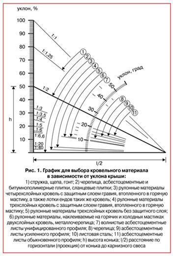
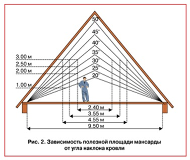

Как рассчитать уклон кровли
Крыша должна надежно защищать здание от действия атмосферных осадков, быть водонепроницаемой, обладать достаточной огнестойкостью, обеспечивать надежный отвод атмосферных вод и иметь доступы для ремонта при эксплуатации. Достичь выполнение всех этих задач невозможно без грамотного расчета уклона крыши.
От качества и долговечности крыши в значительной степени зависит долговечность дома в целом и отдельных его частей. Рекомендуется применять наиболее простые формы скатных крыш: двускатные, мансардные, вальмовые (полувальмовые) и односкатные (для пристроек, веранд и надворных построек). Обычная скатная крыша состоит из кровли, непосредственно предохраняющей от дождя и снега, обрешетки и стропил, поддерживающих кровлю и передающих нагрузку на стены от веса всей крыши, а также от дополнительных нагрузок в виде снега, ветра и др.
Угол наклона (уклон), крыши зависит от климатических условий района строительства, материала кровли и может меняться в значительных пределах: от 11 до 45° и более. Чем суше и теплее климат, тем более пологой может быть крыша. Чем круче угол уклона, тем меньше скапливается на ней снега и, следовательно, уменьшается снеговая нагрузка. При уклоне 45° вес снега практически можно не учитывать.
Вместе с тем, с увеличением угла наклона, резко увеличивается давление ветра на крышу (изменение угла от 11 до 45° увеличивает давление ветра в 5 раз), что вызывает необходимость усиления стропил и обрешетки.
Помимо этого, с увеличением уклона повышается и стоимость кровли. Например, при возведении кровли с уклоном 45° требуется в полтора раза больше материала, чем для плоской, а при уклоне крыши в 60° – в два раза больше.
Выбирая ту или иную конфигурацию крыши, нельзя забывать о том, что выбор кровельного покрытия имеет прямую зависимость от угла наклона. С его учетом применяют определенный кровельный материал и устраивают необходимое для данного уклона число слоев (рис. 1).
Кровельные
материалы по технико-экономическим и физическим свойствам объединены в группы 1–11. На
графике они обозначены дугообразными стрелками. Наклонные линии покузавают уклон ската.
Жирная наклонная линия на графике – это отношение высоты конька h к половине ее заложения
l/2. Отношение 1:2 (приведено в верхней части наклонной линии) показывает, что вертикальный
отрезок h укладывается на горизонтальном отрезке l/2 два раза. На полукруглой шкале эта
наклонная линия показывает уклон крыши в градусах, а на вертикальной – в процентах. Подобным
образом по графику можно определить наименьший уклон для той или иной группы рекомендуемых
кровельных материалов.
Для примера определим при помощи данного графика наименьший
необходимый уклон крыши строящегося здания с кровлей из черепицы.
На графике находим наклонную линию, в которую упирается дугообразная стрелка 2. На пересечении этой наклонной с вертикальной шкалой (на графике она слева) находим ответ: минимальный искомый уклон для заданной крыши составляет 50%. Зная, что уклон ската выражается отношением высоты конька крыши к половине его заложения, определяем уклон i, если высота конька h = 3 м, а заложение l = 12 м: i = h:(l/2) = 3,2:(12/2) = 0,53
Чтобы уклон выразить в процентах, это отношение умножают на 100: i = 0,53х100 = 53.
Расчетный уклон 53% при соблюдении приведенных конструктивных размеров крыши обеспечивает нормальный сброс ливневой воды.
Уклон кровли в ендове должен быть не менее 1%.
В кровлях с уклоном до 10%, выполненных из рулонных битумно-полимерных, битумных материалов с мелкозернистой посыпкой или из мастичных материалов, а также в кровлях с уклоном до 2,5%, выполненных из пленочных рулонных материалов методом наклейки, для защиты верхнего слоя основного водоизоляционного ковра должен предусматриваться защитный слой из гравия или из крупнозернистой посыпки (каменной крошки) с маркой по морозостойкости не ниже 100.
Толщина защитного слоя из гравия должна быть 10–15 мм, из крупнозернистой посыпки, наносящейся в построечных условиях, – 3–5 мм.
В кровлях с уклонами до 2,5% из эластомерных пленочных рулонных материалов, выполненных методом свободной укладки, должен предусматриваться гравийный пригрузочный слой из расчета 50 кгс/м2.
В кровлях с уклоном более 10% из рулонных битумно-полимерных или битумных материалов верхний слой основного водоизоляционного ковра должен выполняться из материала с крупнозернистой посыпкой.
В мастичных кровлях с уклоном более 10%, а также в кровлях из эластомерных пленочных рулонных материалов, выполненных методами наклейки или свободной укладки с механическим креплением при уклонах 2,5% и более, должен быть предусмотрен защитный слой из окрасочных составов.
При устройстве кровли из асбестоцементных волнистых листов, а также в кровлях из металлического профнастила и металлочерепицы при уклоне кровли до 20% должна быть предусмотрена герметизация стыков между настилами.
При уклонах менее 60% лежачие фальцы в кровлях из листовой стали и меди должны быть выполнены двойными и загерметизированы.
Отклонение от заданного уклона кровель из мелкоштучных материалов должно быть <5%.
Определяя уклон кровли, можно рассчитать полезную площадь мансардного или чердачного помещения (рис. 2).
От уклона кровли и климатической зоны зависит способ отвода
дождевых и талых вод с крыши здания. Водоотвод может быть организованный (наружный или
внутренний) и неорганизованный – только наружный.
Наружный организованный водоотвод
устраивают при помощи водосточных желобов и наружных водосточных труб, исходя из следующих
указаний: надстенные или подвесные желоба устанавливают на крышах, покрытия которых
выполнены с уклоном более 15%; продольный уклон желобов должен быть не менее 2%; борта
желобов делают высотой 120 мм; расстояние между водосточными трубами принимают не более 24
м; площадь водосточной трубы принимают из расчета 1,5 см2 ее сечения на 1 м2 площади кровли.
Наружные организованные водостоки рекомендуется устраивать в таких климатических зонах, где
вероятность замерзания воды в наружных водосточных трубах незначительна.
Организованный
отвод воды по внутренним водостокам с наружным выпуском рекомендуется для крыш зданий,
расположенных в зонах с суровым климатом.
Система внутреннего водостока состоит из
водоприемной воронки, стояка, отводной трубы и выпуска. Эта система должна обеспечивать
удаление воды с крыши как при положительной, так и при отрицательной температуре наружного
воздуха.
Отвод воды из системы внутреннего водостока рекомендуется осуществлять в
наружную сеть: дождевой или общесплавной канализации. Площадь кровли, приходящуюся на одну
водосточную воронку, определяют из расчета не более 0,75 м2 кровли на 1 см2 поперечного
сечения водоотводящей трубы. На каждом участке кровли, ограниченном стенами и
деформационными швами, должно быть не менее двух водоприемных воронок; при площади кровли до
700 м2 допускается установка одной воронки диаметром 100 мм.
Водоприемные воронки
внутренних водостоков рекомендуется располагать на продольной оси крыши. Устраивать
водосточные воронки и их стояки в наружных стенах или вблизи них не разрешается, так как
стены могут промерзать.
Чаши воронок внутреннего водоотвода должны находиться в самых
низких местах покрытия на расстоянии не менее 500 мм от парапетов и других выступающих
частей здания. Местное понижение кровли в местах установки воронок внутреннего водоотвода
должно составлять 15-20 мм в радиусе 0,5 м.
Наружный неорганизованный водоотвод
допускается делать на зданиях высотой до пяти этажей в районах с количеством осадков не
более 300 мм в год. Крыши зданий при наружном водоотводе рекомендуется делать односкатными
со сбросом воды в сторону дворового фасада. Над входами в здание с неорганизованным
водоотводом необходимо устраивать козырьки.
Автор: Инна Задвинская

{kind=link}